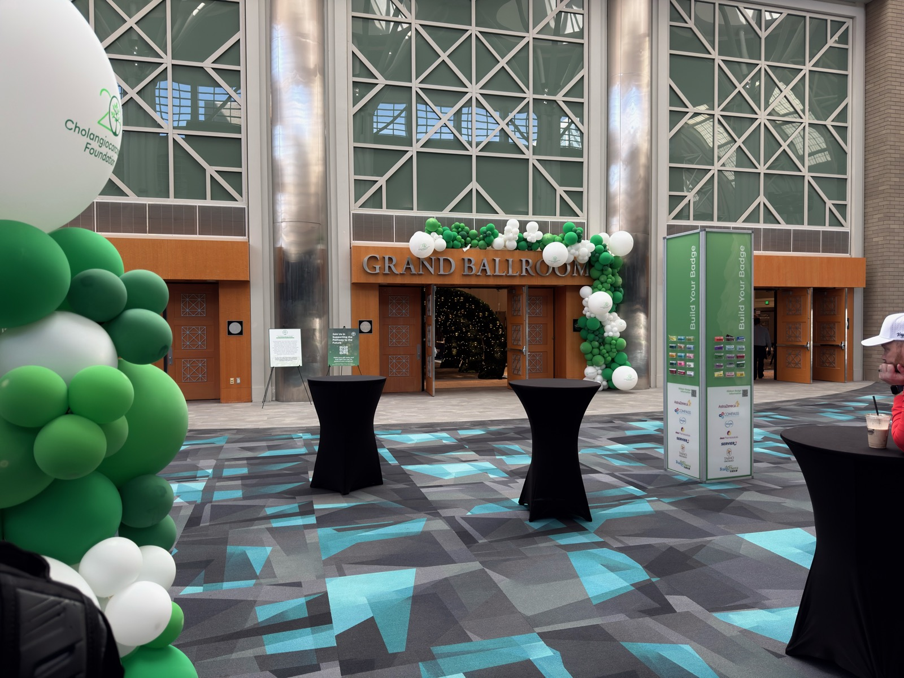
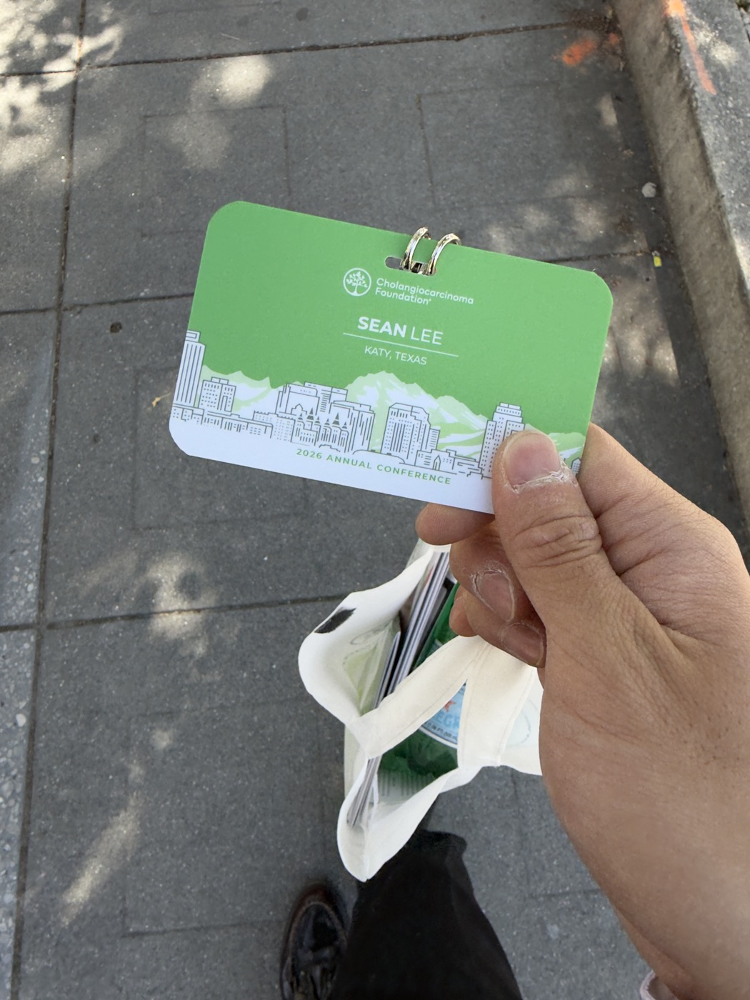
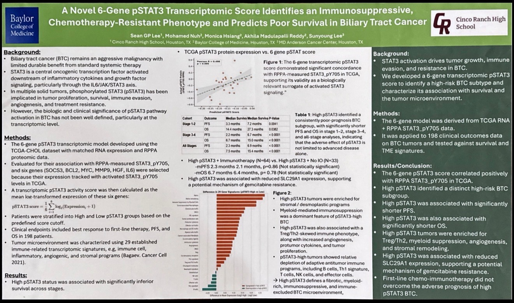
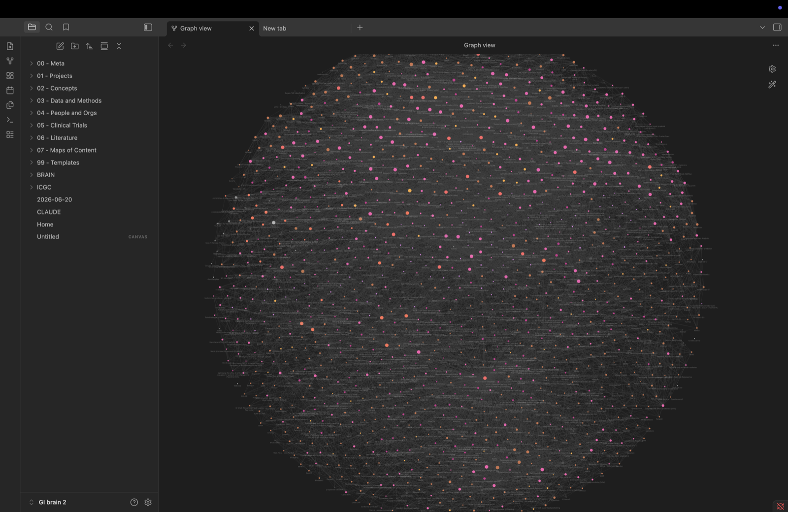
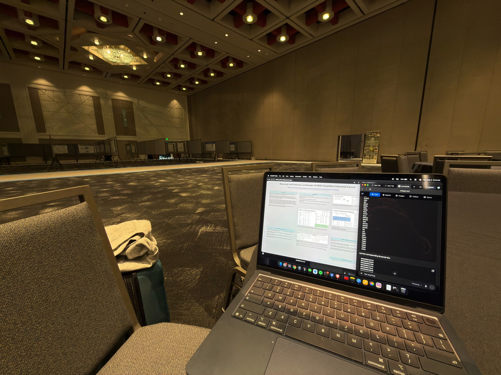

Co-founder, Sutura Genomics · YC Startup School 2026
Computational cancer biology · Katy, Texas
Sean Lee
I build computational models of cancer from patient genomic data and present them as first author. I started independent cancer research at 14, working under an associate professor at MD Anderson — writing the code, building the models, running the analysis.
01 The startup
Accepted to Y Combinator Startup School 2026 · Co-founder
Sutura Genomics
Automated non-rigid tissue alignment for spatial transcriptomics, built with graph deep learning to solve the one case where every existing method structurally fails: tissue tearing.
Sutura Genomics is a startup I co-founded with Rushil Maniar; it was accepted to Y Combinator's Startup School (San Francisco, July 25–26, 2026). We submitted and were accepted under our original name, Arca, and have since renamed the company to Sutura Genomics.
The problem
Spatial transcriptomics maps gene expression across tissue at cellular resolution — the technology now reshaping cancer research, neuroscience, and drug discovery. To build a 3D picture, tissue is cut into thin slices, and those slices warp, stretch, and tear during prep. Before any analysis, the slices have to be aligned back together — a step called tissue registration. Today's state-of-the-art tools, PASTE2 and STalign, use Optimal Transport, which handles smooth warps but breaks on tears: the math literally cannot represent the discontinuity a tear creates. It's a structural limitation, not a tuning problem — and tearing is one of the most common failure modes in real experiments, with no existing tool that handles it well.
What we built
A graph deep-learning approach to tissue registration: we represent each slice as a graph rather than a continuous field and learn the alignment directly from the data. Because a tear becomes a break in the graph instead of a region the math is forced to smooth over, the model can represent the discontinuity that Optimal Transport structurally cannot — which is exactly where today's tools fail. Full architecture and training details are kept private ahead of publication.
What we've proven
Roughly 7× lower registration error than PASTE2 under tissue tearing — measured head-to-head on matched warps.
Benchmarked against PASTE2 on matched torn-tissue cases, our graph model holds roughly 7× lower registration error under tearing and stays markedly flatter as the tearing gets worse. The result is specific to the tearing regime; smooth warps are not the case we built for. Full benchmark protocol and numbers are kept private ahead of publication.
Honest status
- Early-stage results — broader validation across more evaluation settings and tissue sources is in progress.
- Not yet published or peer-reviewed; no preprint is up yet, and the codebase isn't public.
Why it matters
Every multi-slice 3D tissue study needs alignment first, and spatial transcriptomics is on track to be a foundational technology of the next decade of biology — with datasets from 10x Genomics Visium, Slide-seq, and MERFISH growing fast across hundreds of labs. Alignment gates everything downstream, and tearing — one of the most common ways real tissue fails — is the case the field still can't handle. Fix the alignment layer and the analysis above it gets to run on data that currently has to be thrown away. That's the gap Sutura is built for.
- Cancer research — 3D tumor maps of invasion and immune evasion.
- Drug discovery — resolving which cells respond to a therapy versus resist it.
- Neuroscience — brain atlases assembled from thousands of sections.
- Developmental biology — mapping tissue formation across stages.
Where it's going
Phase 1 (→12 months): the best open-source tissue-alignment tool — cited, used by 10+ labs, with the preprint published. Phase 2 (12–24 months): a managed cloud platform — upload data, align in the cloud, download results, no bioinformatics setup, priced per project or dataset. Phase 3 (24+ months): a full spatial-omics analysis platform spanning cell-type annotation, trajectory analysis, and multi-sample integration. The bet: spatial transcriptomics becomes as standard as single-cell RNA-seq, every lab doing it needs alignment, and Sutura is the alignment layer.
Team
- Rushil Maniar Co-founder — pipeline, model architecture, training
- Sean Lee Co-founder — website, outreach, preprint, early user research
Accepted to Y Combinator's Startup School — a two-day founder program — in San Francisco on July 25–26, 2026. To be precise: this is acceptance to the Startup School program; Sutura is not YC-funded and is not a YC-batch company.
- spatial transcriptomics
- graph deep learning
- tissue registration
- non-rigid alignment
- open source
02 Research
I build computational models of cancer from genomic data and present them as first author. I write the code, run the analysis, and own the claims down to the script.
I study pSTAT3 — a signaling state tied to inflammation in tumors — across six gastrointestinal cancers. The question I keep asking: what kind of tumor microenvironment does this state actually mark, and does it predict who lives longer?
-
Manuscript · under review · 2026
Tumor Phospho-STAT3 Marks a Shared Angiogenic–Fibrotic, Immune-Replete Microenvironment Across Gastrointestinal Cancers: A Multi-Omic Analysis of 1,274 Tumors
Molecular Oncology · FEBS Press / Wiley · gold open access
I asked whether tumor pSTAT3 is written into the genome or into the tissue around the cells. Across 1,274 primary tumors and six GI cancers, no somatic mutation reached significance in any cohort — and the cohorts were well-powered, so that null is informative. The phenotype is microenvironmental, not genetically encoded: a shared angiogenic–fibrotic core where independent methods converge. It also reframes a field assumption — these tumors are immune-replete, not immune-excluded. Cytotoxic CD8 and NK cells are not depleted and are often increased; the immune compartment is reorganized, not absent. On its own the program is survival-neutral; prognosis instead tracks the net stromal-over-immune balance, not total microenvironment burden. I built it on a claim→script→output provenance ledger with falsification tests pre-committed before execution, and it cleared independent biostatistics, falsification red-team, and provenance-audit review.
- No somatic gene reached significance in any cohort — an informative null.
- A shared angiogenic–fibrotic core, convergent across independent methods.
- Immune-replete, not immune-excluded — CD8/NK not depleted, often increased.
- Prognosis tracks the net stromal-over-immune balance.
- External validation held under a non-transcriptomic purity control.
-
Manuscript · under review at Scientific Reports · 2026
An Identifiability Framework for Compartment-Resolved STAT3 Attribution from Bulk Tumors: the pSTAT3 "Immune-Enriched Fibrotic" Signal Is Stroma-Borne in Colorectal Cancer
Scientific Reports · sole author
A bulk pSTAT3 reading can't tell whether the signal comes from the cancer cell or the stroma around it — every tumor is a mixture of the two. I deconvolved TCGA GI tumors against single-cell references, recovered the STAT3 program separately in the malignant and stromal compartments, and asked which one carries the "immune-enriched fibrotic" signal. The catch: both compartment scores come from the same mixture, so they're collinear by construction, and the usual partial-correlation "fix" can sign-reverse into a fake suppression effect. So I gated every verdict on an explicit identifiability criterion and read attribution from raw associations and a variance partition. The contrast was identifiable in only the colorectal cohort — and there the immune signal was carried more strongly by stromal STAT3, with measured pSTAT3 tracking cancer-associated-fibroblast abundance. Bulk pSTAT3 in GI cancers marks a STAT3-active microenvironment, not a tumor-cell-autonomous program.
- 1,116 tumors across 5 GI cohorts; deconvolution validated by pseudobulk recovery, an orthogonal method, and an external purity estimate.
- Malignant-vs-stromal STAT3 was identifiable in only one cohort — collinearity made the rest unidentifiable.
- In colorectal, the immune association was carried more strongly by stromal than malignant STAT3.
- Partial correlations could sign-reverse under collinearity — a net-suppression artifact, not biology.
- Robust to gene set, deconvolution setting, abundance residualization, and leave-one-out.
-
Conference poster · first author · 2026
A Novel 6-Gene pSTAT3 Transcriptomic Score Identifies an Immunosuppressive, Chemotherapy-Resistant Phenotype and Predicts Poor Survival in Biliary Tract Cancer
Cholangiocarcinoma Foundation 2026 Annual Conference
As first author, I led a 6-gene pSTAT3 activity score, validated against protein-level STAT3 phosphorylation measured by RPPA (R = 0.498, p = 0.005). Applied to 198 biliary tract cancer patients, a high score predicted significantly worse progression-free and overall survival across all stages. High-score tumors showed an immunosuppressive, chemotherapy-resistant microenvironment — including a candidate chemoresistance mechanism — and first-line chemo-immunotherapy did not rescue prognosis.
- 6-gene score validated against RPPA STAT3_pY705 (R = 0.498).
- High score predicts worse PFS and OS across all stages.
- A candidate chemoresistance mechanism identified in high-score tumors.
- Microenvironment profiled with a published immune-signature panel.
-
Current work · in progress
FGF19–FGFR4 signaling axis
MD Anderson · research mentorship
Investigating the FGF19–FGFR4 axis to identify novel therapeutic targets in GI cancers. Same approach as before: build the model, run the analysis, and assume it's lying to me until it survives falsification.
Stack: R 4.6 / Bioconductor 3.23, Python, GSVA, MCP-counter, Spatial EcoTyper, Cox / Kaplan–Meier survival modeling. Discovery on the TCGA PanCancer Atlas; validation on CPTAC proteogenomic cohorts. An organ-conditional direction remains a stated testable prediction, not yet demonstrated.
- multi-omics
- tumor microenvironment
- GI oncology
- survival modeling
- reproducible provenance
03 Work experience
Work experience
Two startups I co-founded, a 120+ member student org I lead, and the MD Anderson roles where I write the code and run the analysis.
-
Sutura Genomics · Co-Founder & CTO
Apr 2026 – presentFormerly Arca · spatial transcriptomics
Automated non-rigid tissue alignment for spatial transcriptomics, built with graph deep learning to solve the one case where every existing method structurally fails: tissue tearing.
-
Throughway · Co-Founder & CFO
Apr 2026 – presentNonprofit · cancer-patient financial access
A nonprofit reducing financial toxicity and improving insurance access for cancer patients. We're mentored by the MD Anderson Financial Clearance Center. I'm using MD Anderson and Cholangiocarcinoma Foundation connections to expand partnerships and the donor network, with growth planned around the CCF 2027 Annual Conference.
Mentored by the MD Anderson Financial Clearance Center -
Cancer Research Society · Founder & President
Jan 2026 – presentStudent org · 120+ members
I founded and lead a student org — now 120+ members — that connects aspiring researchers with real cancer-research opportunities. I mentor members through the full process: developing ideas, cold-emailing professors and PIs, building relationships. 25+ have already secured research positions at Stanford, Yale, MIT, MD Anderson, Google, and UT — across psychology, neuroscience, cancer, and virology, from incoming freshmen to college undergraduates.
120+ members · 25+ placed in research cancerresearchsociety.science -
MD Anderson Cancer Center · Research Intern
Jan 2024 – presentComputational cancer genomics · GI Medical Oncology
Computational cancer-genomics research under a GI medical oncologist and associate professor at MD Anderson — the home of essentially all my research. Through the lab I'm given access to MD Anderson clinical and molecular data that isn't open to the public — the kind of resource you can't get anywhere else. I write the code, build the models, and run the analysis on patient genomic data: pSTAT3 signaling and the tumor microenvironment across six gastrointestinal cancers, with discovery and validation on public cohorts (TCGA, CPTAC).
-
MD Anderson Cancer Center · Research Apprentice
Sep 2024 – Oct 2024One-on-one mentorship · GI Medical Oncology
One-on-one apprenticeship shadowing a top 1% GI medical oncologist at MD Anderson — the translational side of my computational research, and access most people my age never get. Traveled with the faculty I shadow to the DAVAonco conference (Bermuda), where one MD Anderson faculty is invited each year.
-
Self-funded business · Founder
May 2025 – presentPhotography · reselling · web
I run a photography business and have turned reselling, photography, and building websites into $35,000+ in net profit — fully bootstrapped, no outside capital. Entrepreneurial from a young age.
$35,000+ net profit
04 The record
The youngest presenter — and the only high schooler — in the documented history of the Cholangiocarcinoma Foundation Annual Conference.
The documented record shows no undergraduate or high-school presenters before me. I cleared that line as a first author. Verifiable from the conference's recorded record.
Class of 2028 · Cinco Ranch High School


-
First-author poster · Cholangiocarcinoma Foundation Annual Conference
2026Youngest presenter on record · MD Anderson travel grant
A 6-gene pSTAT3 transcriptomic score predicting poor survival in biliary tract cancer (n = 198). The presented poster of record.

The presented poster of record — CCF 2026. Open in a new tab for full size. -
Poster Presenter · ESMO Annual Congress
2027 · upcomingSingapore · MD Anderson travel grant
Presenting "Tumor Phospho-STAT3 Marks a Shared Angiogenic–Fibrotic, Immune-Replete Microenvironment Across Gastrointestinal Cancers: A Multi-Omic Analysis of 1,274 Tumors."
-
Returning Presenter · Cholangiocarcinoma Foundation Annual Conference
2027 · upcomingFGF19–FGFR4 · hepatocellular carcinoma
Returning to CCF to present current work on the FGF19–FGFR4 signaling axis — identifying novel therapeutic targets in hepatocellular carcinoma and other GI cancers.
- first author
- biliary tract cancer
- computational oncology
05 A system I built
The Research Brain
I built the best research partner I've ever had by assuming it's lying to me. It's an AI research system layered over a ~1,300-note knowledge base on hepatobiliary and pan-GI oncology, genomics, and drug development. It carried one genomics manuscript into peer review.

Everyone's racing to make AI smarter. In cancer research, smarter was never the problem — one fabricated number isn't a typo, it's a retraction. So I built mine to be accountable instead.
The accountability isn't a prompt. It's machinery: Claude Code hooks, custom agents, and slash commands that won't let a claim through unless it survives them. Built with custom agents — biostatistician, citation-verifier, falsification-red-team, provenance-auditor, manuscript-drafter, literature-scout — and commands /qc, /verify-claim, and /falsify.
-
Provenance or it didn't happen
It can't state a result without pointing to the file that produced it — a claim→script→output ledger.
-
Verified or stamped unverified
Every citation is web-verified or marked "unverified." No middle ground.
-
Confidence is earned
Nothing is called "confident" until a separate red-team agent has tried, and failed, to falsify it.
-
No hype, by construction
Effect sizes, confidence intervals, and multiple-testing correction enforced as I write.
-
QC on every edit
A PostToolUse hook flags a missing result file, an unverified DOI, or drift between a note's numbers and the ledger — as I type.
Could it still hallucinate? Of course. The difference is mine has to get past a system built to assume it will.
- Claude Code
- provenance ledger
- falsification red-team
- citation verification
06 About
Who's building this
I'm a rising junior at Cinco Ranch High School, focused on translational oncology and computational biology. I started independent cancer research at 14 and have since become first author on two computational-oncology manuscripts under review (spanning 1,000+ tumors), the youngest presenter in the Cholangiocarcinoma Foundation conference's history, and co-founder of Sutura Genomics — a graph-deep-learning tool for aligning torn tissue in spatial transcriptomics — accepted to YC Startup School.
At 14 I wanted to do real cancer research, and every door assumed I needed a degree first. I figured out the actual gate wasn't credentials or age — it was a well-aimed ask. Instead of generic "can I help?" emails, I read researchers' actual papers and wrote each one a short, specific note proposing a concrete thing I could contribute. That got me a real role at MD Anderson, where I became first author. Then I productized the hack: I founded the Cancer Research Society and taught 120+ students the same cold-email playbook — 25+ have since placed in labs at Stanford, Yale, MIT, MD Anderson, and Google. The system was never locked; it was just waiting for someone to ask well.
My work spans biliary tract cancer, hepatocellular carcinoma, and NSCLC radiomics, in direct collaboration with an associate professor at MD Anderson Cancer Center, researchers at Baylor College of Medicine, and the University of Houston. The work is real: I write the code, build the models, and run the analysis on patient genomic data — still in high school, still building.
I believe the gap between data and clinical impact should be smaller than it is. Everything I build is pointed at that gap.

- cancer genomics
- bioinformatics
- tumor immunology
- survival modeling
07 Skills & methods
Skills & Methods
The stack I use to take patient genomic data from raw matrix to first-author result.
Languages & tools
- Python
- R
- Bioconductor
- NumPy
- Pandas
- scikit-learn
- SimpleITK
Genomics & bioinformatics
- TCGA data analysis
- RPPA proteomics
- Transcriptomic analysis
- GSVA
- MCP-counter
- Spatial EcoTyper
Statistics & survival
- Survival modeling
- Kaplan–Meier
- Cox proportional hazards
- Biostatistics
- Multiple-testing correction
Imaging & radiomics
- PyRadiomics
- GLCM radiomics
- 3D Slicer
Domains
- Computational biology
- Cancer genomics
- Tumor immunology
Communication
- Research writing
- Manuscript preparation
- Public speaking
08 Beyond research
Beyond research
Research is most of my time, not all of it. Here is the rest.
-
Student Volunteer
Jun – Jul 2025Texas Children's Hospital
Accepted at 4.3% (13 of 300+ applicants); I assisted nurses and staff, delivered supplies, and transported patients.
-
Musician
May 2025 – presentMusic for Medicine
I perform live music for elderly residents at care homes and assisted-living facilities.
-
Teaching Assistant
Aug 2024 – presentKCPCH Korean School
-
Volunteer
Jun – Aug 2025Hope Plus Project / Hope to the Future Association
I designed SDG-themed shoes supporting children's health rights in South Sudan, certified by the Undersecretary of the Ministry of Youth and Sports, Republic of South Sudan (ref. HFA-25020043).
09 Contact
Contact
Reach out directly — collaboration, a question about the work, or just to talk. Email is best.
seangplee@gmail.comSean GP Lee · Katy, Texas · 2026